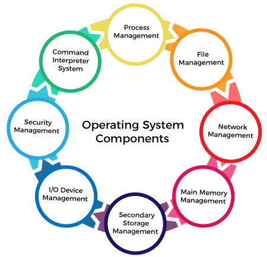

Components of Operating Systems
Components of operating systems exist entirely to make the different of computers work together. All software of users must go through the operating system to use the hardware, regaurdless if its a mouse, keyboard or internet component.
Kernel in Operating Systems
Kernels connect the application software to hardware in a computer. Using the aid of the device drivers and firmware, the kernel gives the basic level of control over the hardware devices of the computer. The kernel manages memory access for programs stored in RAM. It determines what hardware resources are able to be accessed by which programs.
Program Execution in Operating Systems
Operating systems provide a gateway for application programs to communicate with the computer hardware. An application program can communicate with the hardware by following rules in the operating system that have been programmed in. The os is also an assortment of services which ease development and executing of application programs.
Interrupts in Operating Systems
Interrupts are essential to operating systems, they give efficintly a way of the operating system itself to react and intereact with the environment. The other way of doing it is having the operating system look at the different sources of events which require action. This method is found in older systms having small stacks, and is not normal in larger stacks.